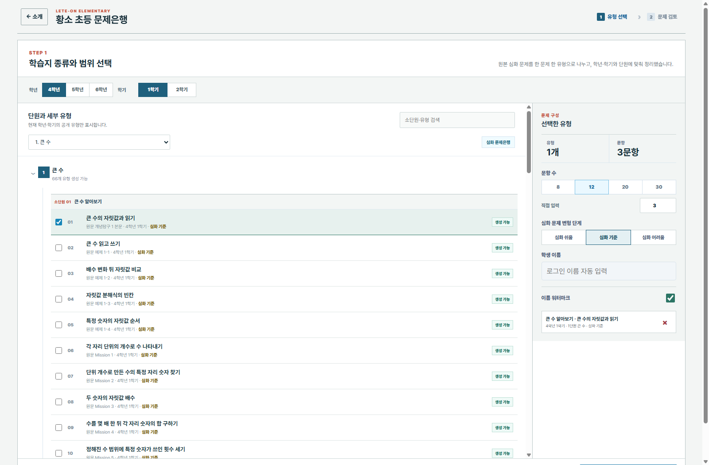

정답은 하나
가능한 답을 다시 계산해 하나일 때만 공개합니다.
개념탐구와 유제의 한 문제를 하나의 세부 유형으로 구분합니다.
숫자만 바꾸지 않고 조건 수와 풀이 단계, 답 형식을 조절합니다.
답이 하나인지 계산하고 화면과 A4 인쇄 상태를 함께 확인합니다.
문제 구성 흐름
현재 배우는 학기부터 복습이 필요한 학기까지 범위를 좁힙니다.
대단원과 소단원을 펼치고 대표 문제 미리보기로 유형을 확인합니다.
문항 수와 심화 단계를 정한 뒤 문제지와 정답·풀이를 함께 만듭니다.
실제 문제은행 화면

공개 기준
가능한 답을 다시 계산해 하나일 때만 공개합니다.
분수, 대분수, 단위와 도형의 길이를 같은 규칙으로 표시합니다.
눈금, 점, 가려진 도형과 위치가 분명한지 실제 화면에서 확인합니다.
화면에서 보인 문제 구조가 인쇄에서도 잘리거나 바뀌지 않게 검수합니다.
LETE-ON ELEMENTARY